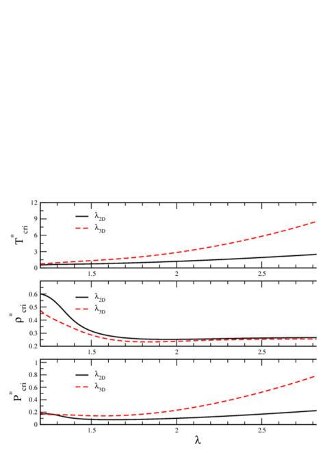
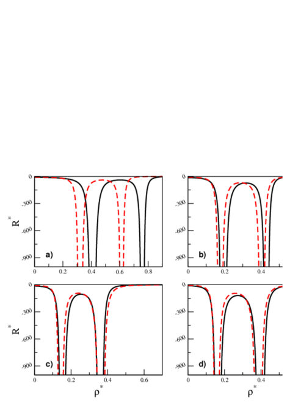
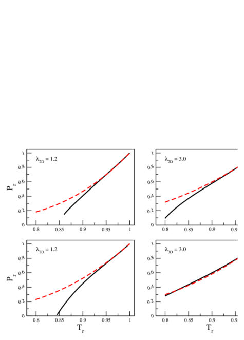
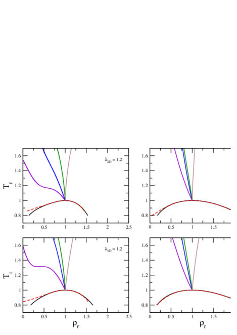
← Index · ← Previous · Next →
Authors: Zubin Zheng, Jiahao Wu, Shengcai Liu
Type: theory · Category: quantum information and computing · PDF: https://arxiv.org/pdf/2605.13072v1
Analysis basis: full PDF text, analyzed in chunks
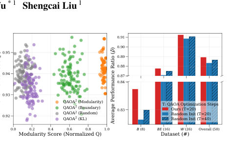
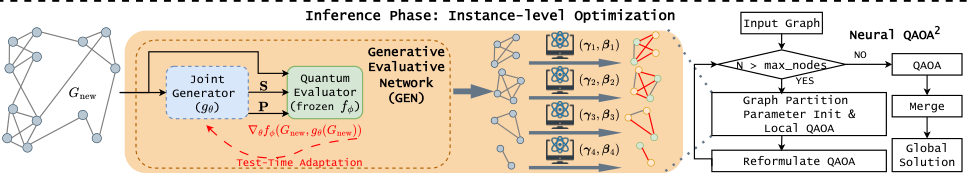
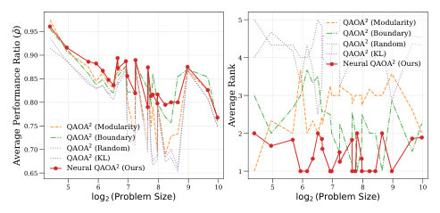
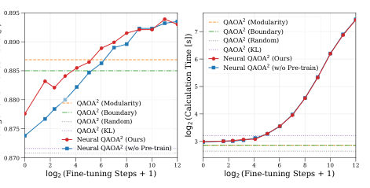
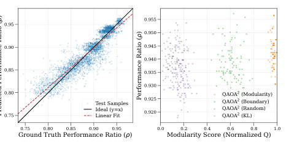
Summary. This paper introduces a machine learning-driven approach to improve the performance of QAOA for large-scale optimization. By using a differentiable neural network to jointly optimize graph partitioning and quantum circuit parameters, it overcomes the limitations of traditional heuristic methods and enables better scalability on near-term quantum hardware.
Why it may be interesting. not directly relevant
Main problem. The scalability of the Quantum Approximate Optimization Algorithm (QAOA) is limited by hardware qubit constraints and the inefficiency of heuristic graph partitioning and random parameter initialization.
Main result. The Neural QAOA2 framework outperforms heuristic baselines, ranking first on 101 out of 183 tested instances, and demonstrates zero-shot generalization across unseen graph topologies and scales.
Method. An end-to-end differentiable framework using a Generative Evaluative Network (GEN) that jointly generates graph partitions and initial circuit parameters via a differentiable quantum evaluator surrogate.
Model / system. The study focuses on combinatorial optimization problems including MaxCut, QUBO, and Ising spin glass models, represented by cost Hamiltonians constructed from Pauli-Z operators.
Key observables. Performance ratio (rho), solution quality relative to baseline, and Modularity Score.
Important parameters / regimes. Circuit depth (p), number of variables (N ranging from 21 to 1000), and qubit capacity constraints (max nodes per subgraph).
Assumptions / limitations. The method assumes that parameters trained at depth p=1 can be effectively expanded to deeper circuits (p > 1) and relies on the accuracy of a surrogate neural network evaluator.
Figures summary. Figure 1 shows the misalignment between heuristic metrics and quantum performance; Figure 2 details the GEN architecture; Figure 5 compares the correlation of the evaluator vs. modularity; Figure 6 shows performance across varying qubit counts.
Paper structure. The paper introduces the scalability problem, proposes the Neural QAOA2 architecture (GEN, Joint Generator, and Quantum Evaluator), details the training strategy (distribution-level and instance-level adaptation), presents extensive benchmarking across various datasets and scales, and concludes with robustness and scalability analyses.
The quantum approximate optimization algorithm (QAOA) holds promise for combinatorial optimization but is constrained by limited qubits. While divide-and-conquer frameworks like QAOA$^{2}$ address scalability by partitioning graphs into subgraphs, existing methods suffer from two fundamental limitations: i) misalignment between heuristic partitioning metrics and quantum optimization goals, and ii) topology-blind parameter initialization that leads to optimization cold starts. To bridge these gaps, we propose Neural QAOA$^{2}$, an end-to-end differentiable framework that jointly generates graph partitions and initial parameters. By integrating a generative evaluative network (GEN), our method utilizes a differentiable quantum evaluator as a high-fidelity performance surrogate to provide direct gradient guidance, enabling the joint generator to learn the intrinsic mapping from graph topology to high-quality partition and parameter configurations. Extensive experiments on 183 QUBO, Ising, and MaxCut instances (21 to 1000 variables) demonstrate that our gradient-driven approach broadly outperforms heuristic baselines, ranking first on 101 instances. It exhibits zero-shot generalization across out-of-distribution graph topologies and scales.
Authors: Philipp Höllmer, Nicole Smina, John P. Marquardt, Michael S. Chen, Steven van Kesteren, Stefano Sacanna, Glen M. Hocky
Type: theory · Category: statistical mechanics · PDF: https://arxiv.org/pdf/2605.12870v1
Analysis basis: full PDF text, analyzed in chunks
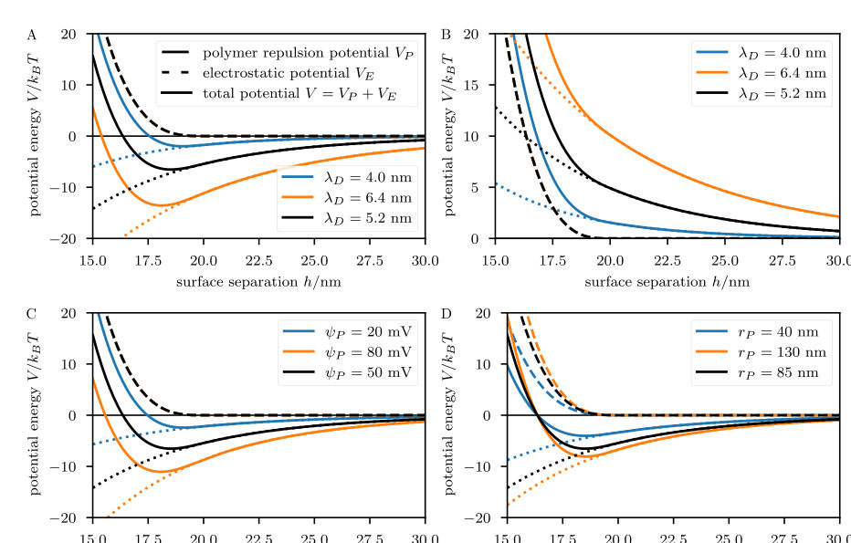
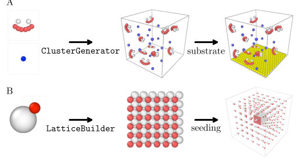
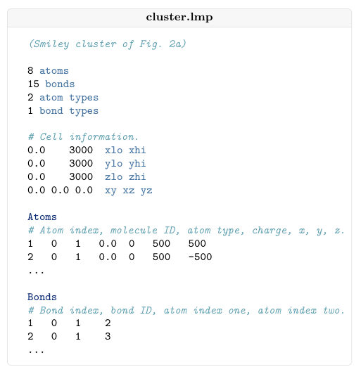
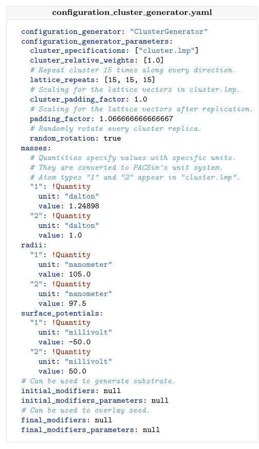
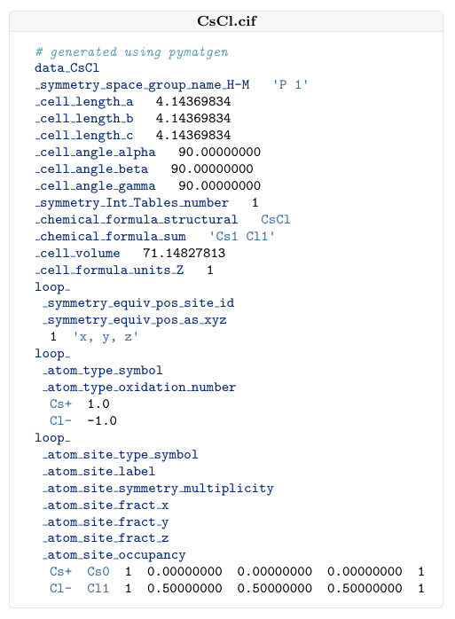
Summary. The authors present PACSim, an open-source molecular dynamics framework designed to simulate the self-assembly of polymer-coated charged colloids. It allows researchers to easily model complex experimental protocols, such as dynamic changes in salt concentration, to study phase transitions and nucleation. The framework is highly extensible, supporting machine learning integration and enhanced sampling techniques.
Why it may be interesting. not directly relevant
Main problem. The need for a flexible, open-source simulation framework to study the self-assembly, nucleation pathways, and crystal stability of Polymer-Attenuated Coulombic (PACS) colloidal systems.
Main result. The development of PACSim, a framework that successfully demonstrates how tuning parameters like Debye length can shift nucleation from classical to non-classical pathways and how crystal structures compete via Ostwald ripening.
Method. A molecular dynamics (MD) framework built on OpenMM that utilizes custom GPU-accelerated forces, integration with PLUMED for enhanced sampling, and Python-based utilities for complex configuration generation.
Model / system. The system consists of charged spherical colloidal particles coated with a polymer brush in an aqueous electrolyte solution, featuring a potential composed of polymer-brush repulsion (Alexander-de Gennes) and screened Coulombic interactions.
Key observables. Crystal structure formation, lattice spacing, radial distribution functions g(r), cluster size evolution, and potential energy trajectories.
Important parameters / regimes. Debye length (lambda_D), particle radius, surface potential, salt concentration, temperature, and polymer brush length/density.
Assumptions / limitations. The use of the Derjaguin approximation for pair potentials, the low-potential approximation (psi < 60 mV), and the assumption that the polymer brush effectively suppresses strong electrostatic overlap.
Figures summary. Figure 1 shows the effect of tuning lambda_D on the interaction potential; Figure 2 illustrates the configuration generation workflow; Figures 9-10 demonstrate nucleation trajectories and the melting of crystal seeds.
Paper structure. The paper introduces the PACS assembly mechanism, describes the PACSim software architecture and features, details the configuration generation utilities, presents simulation results regarding nucleation and stability, and discusses performance and future directions.
Polymer-Attenuated Coulombic Self-Assembly (PACS) is a flexible experimental approach for generating crystals from simple colloidal building blocks. The central components are charged spherical particles coated with a polymer brush that prevents irreversible aggregation. Whether oppositely charged colloids crystallize, and which structures they form, depends on several factors, including colloid concentration, charge, and size, as well as the salt concentration of the solution. Molecular dynamics (MD) simulations are a powerful tool for predicting the outcomes of PACS assembly experiments and also provide particle-level insight into the assembly processes. Here, we present an open-source simulation framework, PACSim, that enables MD simulation studies of assembly by PACS across a range of experimentally relevant scenarios. PACSim is built on top of OpenMM, a flexible MD simulation framework that readily supports the implementation of different interaction potentials, as well as integration with other tools such as enhanced-sampling and machine-learning frameworks. We describe the motivation for PACSim, outline its features, report methodological advancements inspired by this framework, and provide examples of its use.
Authors: Ejaaz Merali, Mohamed Hibat-Allah, Mohammad Kohandel, Richard T. Scalettar, Ehsan Khatami
Type: theory · Category: numerical methods · PDF: https://arxiv.org/pdf/2605.13807v1
Analysis basis: full PDF text, analyzed in chunks
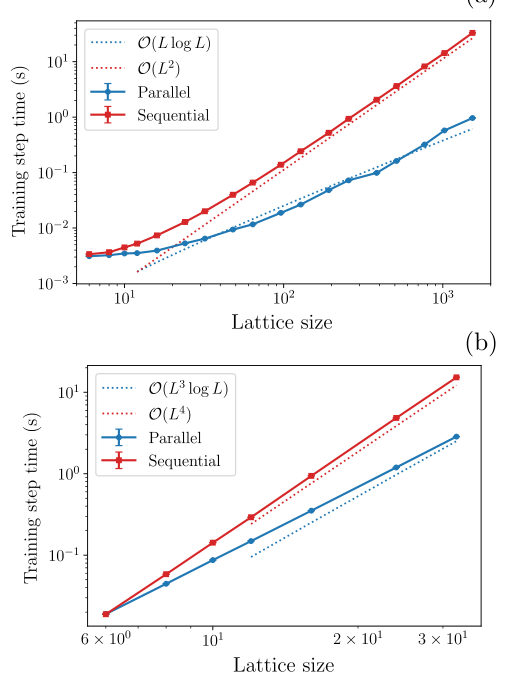
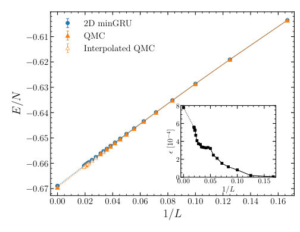
Summary. The paper introduces Parallel Scan Recurrent Neural Quantum States (PSR-NQS), a new method to make recurrent neural networks scalable for quantum simulations. By using parallel scan algorithms, the authors overcome the sequential bottleneck of traditional RNNs, enabling high-precision simulations of large 2D spin lattices.
Why it may be interesting. It provides a new, scalable numerical tool for simulating large-scale many-body dynamics and ground states using efficient, parallelizable machine learning architectures.
Main problem. Addressing the scalability limitations of Recurrent Neural Network Quantum States (RNN-NQS), which are traditionally viewed as computationally slow due to their sequential nature.
Main result. The development of Parallel Scan Recurrent Neural Quantum States (PSR-NQS) allows for efficient, large-scale 2D simulations (up to 52x52 lattices) with accuracy comparable to Quantum Monte Carlo.
Method. Utilizing parallelizable recurrence via parallel scan algorithms and State Space Models (SSMs) like the Linear Recurrent Unit (LRU) and minGRU within a Variational Monte Carlo framework.
Model / system. Quantum many-body systems in 1D and 2D, specifically the 1D Transverse-Field Ising Model (TFIM) and the 2D square-lattice Heisenberg antiferromagnet.
Key observables. Ground-state energy per site (E/N) and relative error compared to exact solutions or QMC data.
Important parameters / regimes. System sizes up to 52x52 sites, 1D critical point at h=1, and asymptotic scaling of O(L log L) in 1D and O(L^3 log L) in 2D.
Assumptions / limitations. The autoregressive sampling process remains O(N) time, and the SSM matrix is assumed to be diagonal in practice to ensure efficient computation.
Figures summary. Figure 1 compares runtime per training step between sequential and parallel scan versions; Figure 2 shows finite-size scaling of ground-state energy with low relative error.
Paper structure. The paper introduces the scalability problem, presents the PSR-NQS architecture (LRU and minGRU), demonstrates performance via 1D and 2D benchmarks, and provides scaling and error analysis.
Neural-network quantum states have emerged as a powerful variational framework for quantum many-body systems, with recent progress often driven by massively parallel architectures such as transformers. Recurrent neural network quantum states, however, are frequently regarded as intrinsically sequential and therefore less scalable. Here we revisit this view by showing that modern recurrent architectures can support fast, accurate, and computationally accessible neural quantum state simulations. Using autoregressive recurrent wave functions together with recent advances in parallelizable recurrence, we develop variational ansätze, called parallel scan recurrent neural quantum states (PSR-NQS), which can be trained efficiently within variational Monte Carlo in one and two spatial dimensions. We demonstrate accurate benchmark results and show that, with iterative retraining, our approach reaches two-dimensional spin lattices as large as $52\times52$ while remaining in agreement with available quantum Monte Carlo data. Our results establish recurrent architectures as a practical and promising route toward scalable neural quantum state simulations with modest computational resources.
Authors: Chris Cardullo, Min Kang
Type: theory · Category: quantum information and computing · PDF: https://arxiv.org/pdf/2605.13758v1
Analysis basis: full PDF text, analyzed in chunks
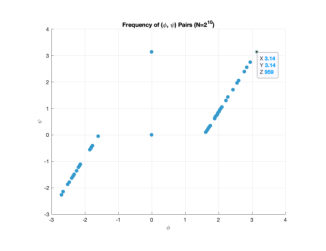
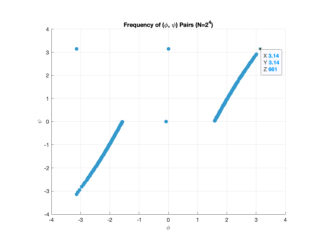
Summary. This paper explores optimizations for Grover's algorithm by allowing the phase rotation angles to vary. It reveals that the traditional 'phase matching' rule breaks down as the search nears completion, providing a more efficient way to reach a target probability of 1.
Why it may be interesting. not directly relevant
Main problem. The paper investigates how to optimize the phase changes in a generalized Grover's algorithm to maximize the probability of finding a target state, specifically looking for deviations from the standard pi-phase and phase-matching conditions.
Main result. The authors find that while classical Grover's algorithm and phase matching are optimal when the target probability is low, they deviate from these conditions as the probability approaches 1. They also demonstrate that the optimized algorithm can achieve a target probability of 1.0 in certain small-scale systems where the classical version falls short.
Method. The study uses amplitude condensation to reduce the problem to a 2D linear map, followed by critical point analysis (gradient and Hessian) and numerical optimization using MATLAB's global optimization toolbox.
Model / system. An unstructured quantum search model in a finite space of size N = 2^n, utilizing a generalized Grover iterate involving phase rotations and a Fourier transform.
Key observables. The probability of observing the target state P(|tau>).
Important parameters / regimes. Phase changes (phi and psi), search space size (N), target probability, and the complexity (phase difference theta) of the amplitude vector.
Assumptions / limitations. The analytical proofs often assume a sufficiently large N to focus on leading-order terms and focus specifically on the case of a single target element.
Figures summary. Graphs showing the relationship between the optimal psi phase change and the phi phase change for different values of N.
Paper structure. The paper introduces the generalized Grover problem, defines the mathematical model and amplitude condensation, presents theorems for optimal phase changes and the large N limit, provides numerical validation and a 5-qubit case study, and concludes with future research directions.
We study the fully generalized Grover's algorithm to find the optimal phase changes for each step of the iteration to maximize gain in probability of observation of the target, and when phase matching is required. We find that classical Grover's algorithm and phase matching remains to be optimal till the target probability gets close 1. However, as the probability of observation approaches 1, the optimal phase changes differ from $π$ and no longer observe phase matching. We provide the optimization statement to find the optimal phase changes given the current amplitude vector and the size of the set. To analyze this formula, we approach it from a numerical and analytical perspective, with the analytical perspective focusing on special cases that simplify the optimization and allow for general statements about its behavior. Finally, we provide an example of a 5 qubit system and show that for the final iteration the optimal phase changes differ from traditional Grover's algorithm and do not observe phase matching, but lead to an increase in the probability of the target.
Authors: WenBin Yan
Type: theory · Category: quantum information and computing · PDF: https://arxiv.org/pdf/2605.13268v1
Analysis basis: full PDF text, analyzed in chunks
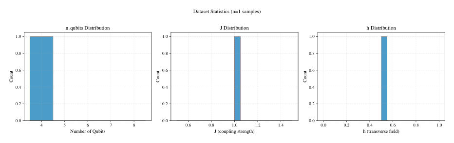
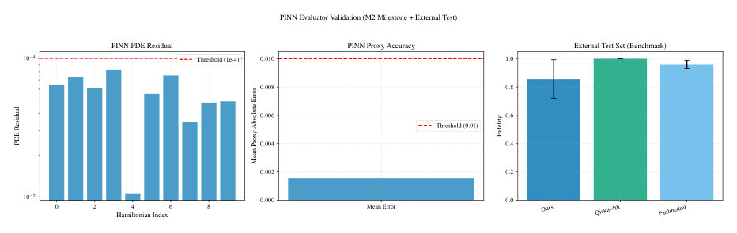
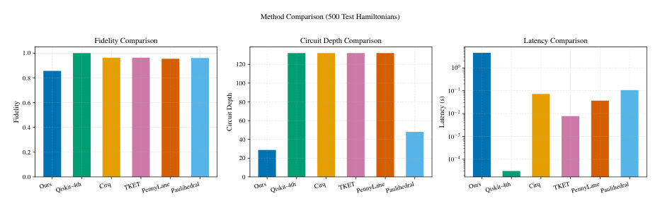
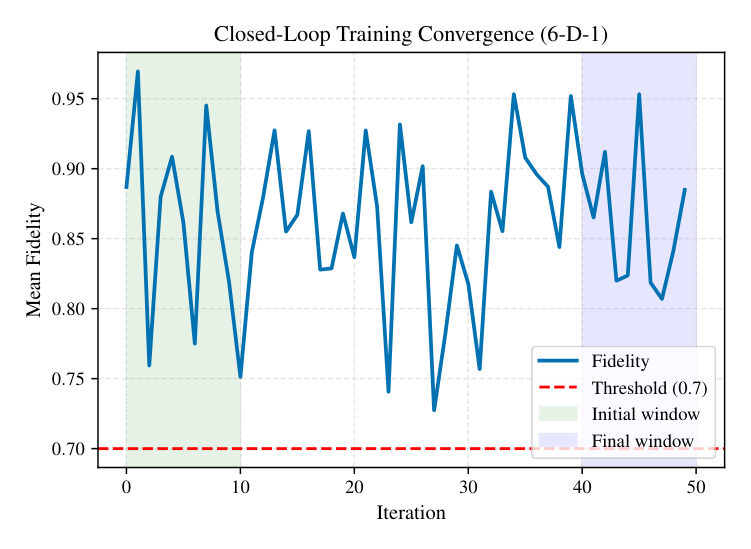
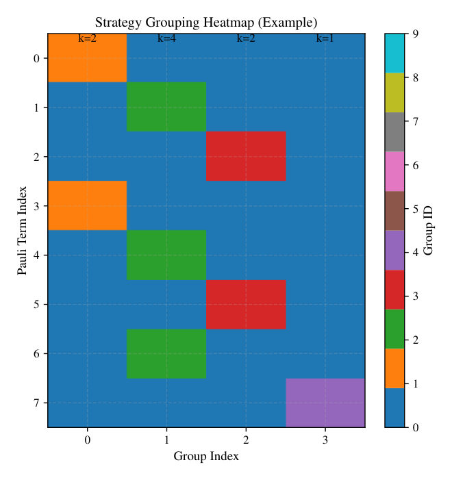
Summary. This paper proposes a machine learning framework to automate the optimization of quantum circuit compilation for Trotter-Suzuki simulations. By combining generative diffusion models with physics-informed neural networks, it achieves massive reductions in circuit depth and gate counts compared to standard heuristic-based toolchains.
Why it may be interesting. not directly relevant
Main problem. Optimizing Trotter-Suzuki decomposition for Hamiltonian evolution on NISQ hardware by simultaneously minimizing circuit depth/CNOT count and maximizing simulation fidelity.
Main result. The method achieves significant circuit compression, reducing depth to ~21.8% and CNOT count to ~19.2% of a 4th-order Qiskit baseline while maintaining high fidelity, and shows strong generalization to molecular Hamiltonians.
Method. A closed-loop generative-and-evaluate pipeline using a Graph Neural Network (GNN) to encode Hamiltonian structure, a hybrid Diffusion model to propose decomposition strategies, and a Physics-Informed Neural Network (PINN) to provide differentiable fidelity feedback via REINFORCE optimization.
Model / system. The study focuses on Hamiltonian time evolution using the Transverse Field Ising Model (TFIM) and Heisenberg chains for training/testing, as well as molecular Hamiltonians (H2 and LiH) obtained via Jordan-Wigner transformation.
Key observables. Fidelity, circuit depth, CNOT count, and PDE residual of the PINN.
Important parameters / regimes. Qubit counts (n=4, 6, 8), coupling strength J, transverse field h, and the trade-off parameter lambda for multi-objective optimization.
Assumptions / limitations. The PINN assumes the ability to fit the Schrödinger equation accurately; the effectiveness of the method is dependent on the specific training regime and hyperparameter tuning (e.g., CFG).
Figures summary. Figures include distributions of the TFIM training dataset, scaling of depth/fidelity in Heisenberg chains, and molecular scans showing fidelity and depth reduction for H2 and LiH across varying bond lengths.
Paper structure. The paper introduces the optimization problem, describes the GNN-Diffusion-PINN architecture, details the reinforcement learning training loop, presents performance comparisons against standard SDKs (Qiskit, etc.), and evaluates generalization to out-of-distribution Heisenberg and molecular systems.
Product formulas for Trotter Suzuki simulation remain a practical route to Hamiltonian evolution on noisy intermediate scale quantum (NISQ) hardware, yet their accuracy hinges on three coupled choices: term grouping, product formula order, and timestep allocation. Toolchains such as Qiskit and Paulihedral lean on hand tuned heuristics, while the discrete nature of grouping and order makes naive gradient based optimization awkward. We describe a generate and evaluate loop: a conditional diffusion model proposes strategies, a physics informed neural network (PINN) supplies differentiable fidelity feedback, and a graph neural network (GNN) encodes commutator structure. Training spans a hybrid space (discrete grouping and order, continuous time steps); the closed loop uses REINFORCE and a Pareto tracker. On the transverse field Ising model (TFIM), under our primary comparison setup, the method reaches 85.6% of the fidelity of a fourth order Qiskit baseline (0.856) at roughly 21.8% of the circuit depth and 19.2% of the baseline CNOT count. Under an equal depth budget, fine tuning in the loop reached a best observed fidelity of 0.9994. Updated ablations show that, for a fixed training budget and default guidance knobs, module contributions depend on the training recipe and guidance hyperparameters CFG in particular needs to be tuned jointly with compute budget. Overall, the results suggest that "generative model and physics supervision" is a viable angle for NISQ oriented compilation, though where it wins still depends on the operating point.
Authors: Tyler Kann, Shrinivas Kudekar, Matthieu R. Bloch
Type: theory · Category: quantum information and computing · PDF: https://arxiv.org/pdf/2605.12796v1
Analysis basis: full PDF text, analyzed in chunks
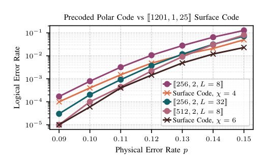
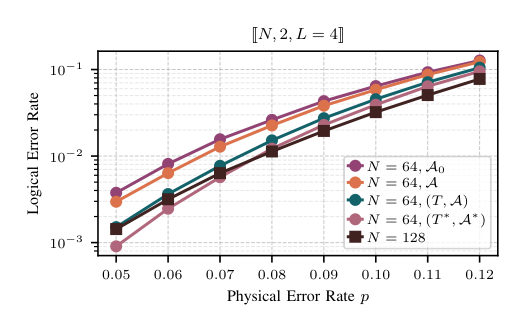
Summary. This paper introduces a new class of quantum error-correcting codes that use precoding techniques from classical information theory to enhance polar codes at short blocklengths. These codes can match the error suppression of much larger surface codes while using significantly fewer qubits, making them highly efficient for near-term quantum hardware.
Why it may be interesting. not directly relevant
Main problem. Improving the performance of quantum polar codes in the short blocklength regime by adapting classical rate-1 precoding techniques while satisfying the CSS (Calderbank-Shor-Steane) construction constraints.
Main result. The authors developed a new family of quantum precoded CSS codes that achieve logical error rates comparable to much larger surface codes, offering a significant boost in code rate and qubit efficiency.
Method. A genetic algorithm is used to optimize the information sets and the precoding matrix under CSS constraints, combined with a joint quaternary Successive Cancellation List (SCL) decoder.
Model / system. The study focuses on quantum error-correcting codes (specifically CSS and polar codes) operating under a depolarizing noise channel.
Key observables. Logical error rate, physical error rate, code rate, and gate complexity (Clifford gate count).
Important parameters / regimes. Blocklength (N=64, 128, 256, 512), code dimension (K), and the physical error rate (p).
Assumptions / limitations. The precoder must be an involution and persymmetric to maintain the CSS property; the noise is modeled by a standard depolarizing channel.
Figures summary. Figure 1 compares the logical error rates of the proposed precoded codes against the surface code; Figure 2 illustrates the performance improvement of a code through successive stages of the genetic algorithm optimization.
Paper structure. The paper introduces the quantum precoding concept, details the CSS-constrained optimization via a genetic algorithm, describes the joint quaternary decoding method, and concludes with a performance comparison against the surface code in terms of error rates and circuit complexity.
We introduce a new family of CSS codes obtained from rate-1 precoded polar codes, which harnesses the precoding benefits obtained for classical short blocklength polar codes. We optimize the rate profile and precoder of these codes with a genetic algorithm, and present codes of dimension $ [![256, 2 ]!] $ and $ [![512, 2]!] $ that have logical error rates similar to the $ [![1201, 1, 25 ]!] $ surface code over the depolarizing channel.
Authors: Matías G. Gonzalez, Yurii Skourski, Johannes Reuther, Ivica Živković
Type: both · Category: strongly correlated electrons · PDF: https://arxiv.org/pdf/2605.13263v1
Analysis basis: full PDF text, analyzed in chunks
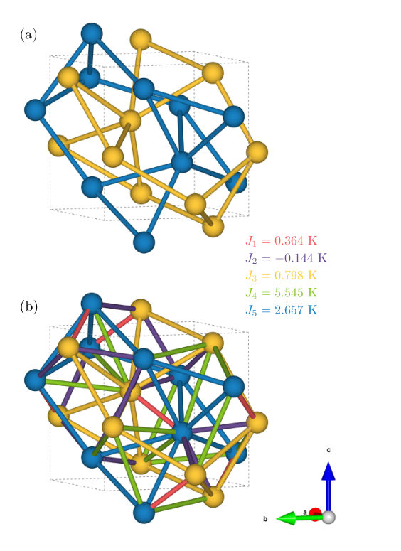
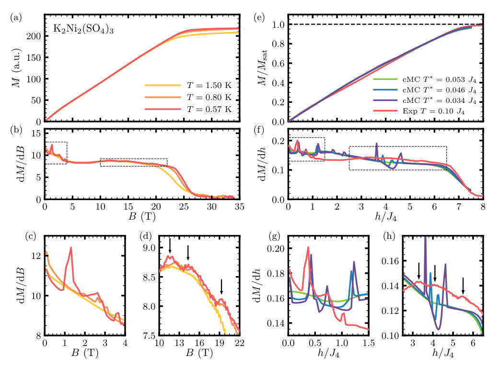
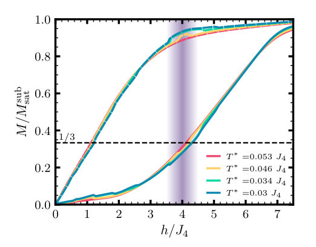
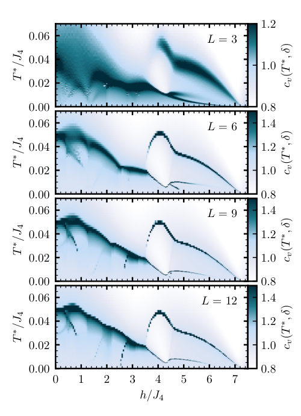
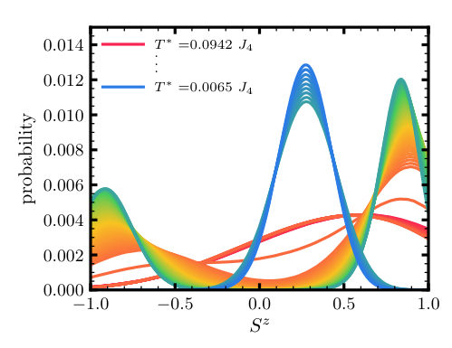
Summary. This paper explores the magnetic properties of a complex 3D frustrated lattice, identifying a potential 2/3 magnetization plateau and reentrant phase behavior. By combining high-field experiments with classical simulations, the authors show that the observed phase is a characteristic feature of the trillium lattice geometry. This provides a roadmap for searching for quantum plateau states in related langbeinite compounds.
Why it may be interesting. not directly relevant
Main problem. Investigating the complex magnetic phase transitions, magnetization process, and the potential existence of a 2/3 magnetization plateau in the double-trillium langbeinite K2Ni2(SO4)3.
Main result. The study identifies a series of phase transitions and a 'dome' structure in the phase diagram that suggests a 2/3 magnetization plateau, characterized by an up-up-down configuration on the strong-TL sublattice and a fully polarized weak-TL sublattice.
Method. High-field pulsed magnetic field measurements (up to 40 T) are combined with classical Monte Carlo simulations using 3-component classical vectors.
Model / system. The system is K2Ni2(SO4)3, a member of the langbeinite family consisting of two intertwined S=1 trillium lattices (strong-TL and weak-TL) described by a highly frustrated 3D Heisenberg Hamiltonian with five exchange interactions.
Key observables. Magnetization (M), magnetization derivative (dM/dH), specific heat (cv), energy per site, and spin structure factors (Szz and Sxy).
Important parameters / regimes. Exchange parameters J1 through J5, magnetic field (up to 40 T), and temperature (down to 1.1 K).
Assumptions / limitations. The classical Monte Carlo approach assumes that quantum effects are suppressed by the 3D dimensionality and the spin magnitude (S=1).
Figures summary. Figures illustrate the evolution of longitudinal and transverse spin structure factors, showing the appearance of new Bragg peaks in the up-up-down phase and the reduction of background fluctuations.
Paper structure. The paper introduces the langbeinite system, describes the experimental setup and Hamiltonian, presents magnetization and derivative data, details the Monte Carlo simulation results (phase diagrams and spin configurations), and concludes with the universality of the observed plateau-like behavior.
K$_2$Ni$_2$(SO$_4$)$_3$ is a member of the langbeinite family, consisting of two intertwined $S=1$ trillium lattices, out of which one is strongly coupled (strong-TL) and the other is weakly coupled (weak-TL). Further inter-trillium interactions give rise to a highly-frustrated Heisenberg Hamiltonian. Despite ordering at low temperatures, K$_2$Ni$_2$(SO$_4$)$_3$ lies close in parameter space to a spin-liquid region that surrounds the tetratrillium limit, where each triangle belonging to strong-TL turns into a tetrahedron by connecting to a single spin from weak-TL. Here, we compare the experimentally determined magnetization process using pulsed magnetic fields up to $40$ T with classical Monte Carlo calculations, uncovering a series of phase transitions at both low and intermediate fields. Furthermore, we reveal a signature of a $2/3$ magnetization plateau consisting of a $1/3$ phase on strong-TL and a fully polarized phase on weak-TL. Although in the classical limit no plateau is expected, we find a very prominent dome structure reflecting the tendency of the system to stabilize this particular spin configuration. The presence of a dome leads to a reentrant phenomenon in which the system recovers the Hamiltonian symmetries when increasing the magnetic field. Finally, we show that this plateau-like phase is also present in the classical Heisenberg model on the single trillium and tetratrillium lattices, indicating its possible presence in the large family of double-trillium langbeinite compounds. Our findings motivate future studies on the presence of the plateau phase in the quantum limit of both trillium and double-trillium materials within the langbeinite family.
Authors: Erik Lötstedt, Kaoru Yamanouchi
Type: theory · Category: quantum information and computing · PDF: https://arxiv.org/pdf/2605.12866v1
Analysis basis: full PDF text, analyzed in chunks
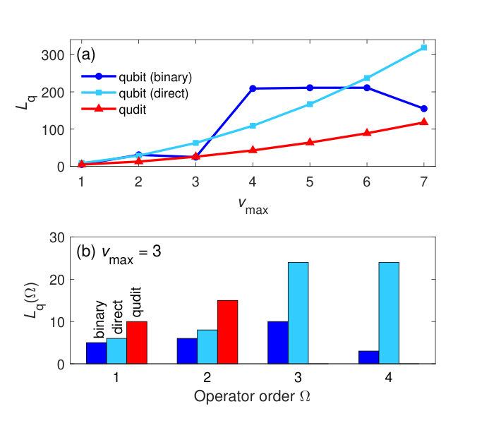
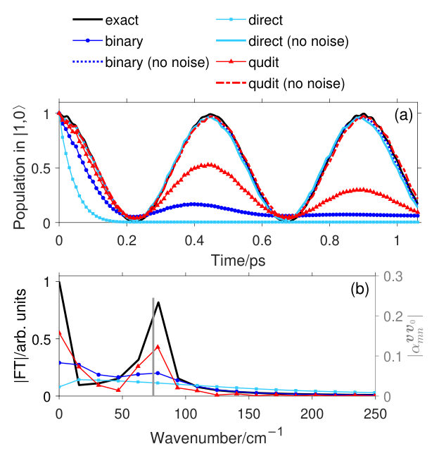
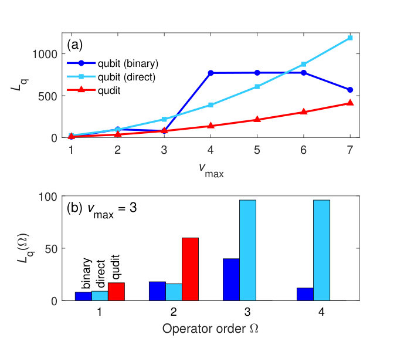
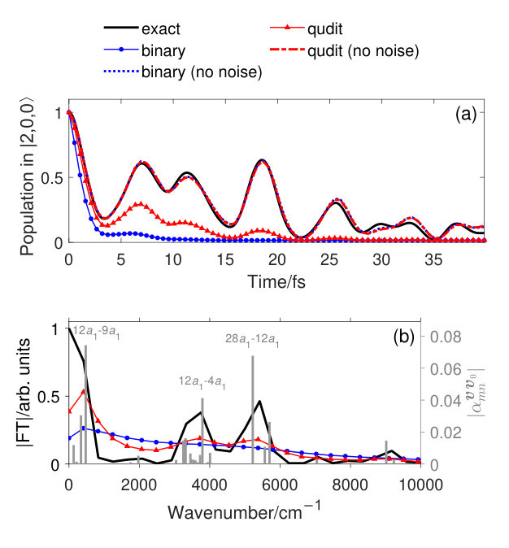
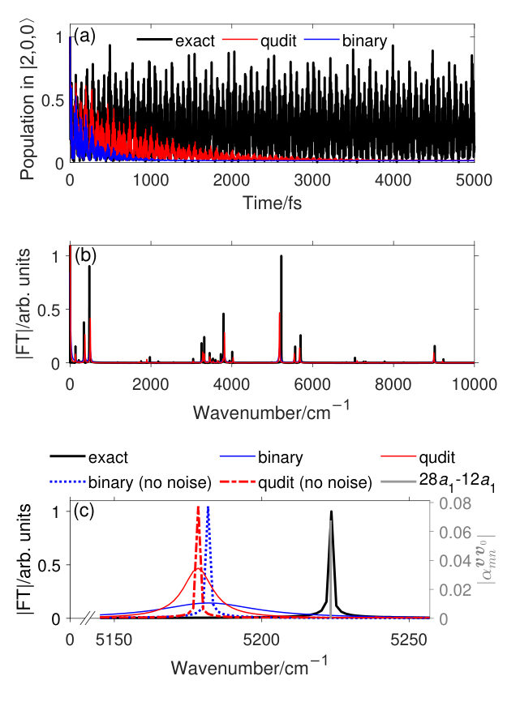
Summary. This paper investigates using qubits and qudits to simulate the vibrational dynamics of CO2 and H2O molecules. It finds that qudit encoding is superior for noisy quantum hardware because it requires fewer gates and is more resilient to decoherence. This makes qudits a promising approach for high-fidelity molecular spectroscopy on near-term quantum devices.
Why it may be interesting. It provides a practical comparison of qudit vs. qubit architectures for molecular spectroscopy, demonstrating how higher-dimensional encodings can mitigate noise in NISQ-era simulations of many-body molecular dynamics.
Main problem. Comparing the efficiency and accuracy of different quantum encoding schemes (binary qubit, direct qubit, and qudit) for simulating the vibrational dynamics of molecules under the influence of noise.
Main result. Qudit encoding provides the most accurate and efficient simulation because its Hamiltonian contains fewer terms, leading to reduced cumulative error from depolarizing noise and fewer required gates.
Method. The study uses first-order Suzuki-Trotter decomposition for time evolution and a completely depolarizing noise model to evaluate the impact of gate errors on vibrational population transfer.
Model / system. The physical models consist of the vibrational dynamics of CO2 (two-mode) and H2O (three-mode) molecules, using an anharmonic Hamiltonian that includes harmonic oscillator terms and third-order anharmonic coupling.
Key observables. Time-dependent vibrational populations and their Fourier transforms (vibrational spectra).
Important parameters / regimes. Maximum vibrational quantum number (v_max), gate error rates (10^-3 and 10^-5), and the number of two-qubit/qudit gates.
Assumptions / limitations. The anharmonic potential is limited to third-order terms, and the noise is modeled strictly as a completely depolarizing channel.
Figures summary. Figures show the scaling of Hamiltonian terms and operator orders, time-dependent populations and Fourier spectra for H2O under different noise levels, and the decay time comparison between encodings.
Paper structure. The paper introduces the encoding schemes, defines the molecular Hamiltonians for CO2 and H2O, details the simulation and noise models, presents comparative results for gate counts and accuracy, and discusses error thresholds and experimental relevance.
We investigate the quantum computing of the vibrational dynamics of CO$_2$ and H$_2$O by constructing the vibrational Hamiltonian in qubit and qudit form by two types of qubit encodings (binary and direct) and a qudit encoding. We simulate the time-dependent vibrational population transfer using the three different encodings, including the effect of noise and find that the qudit encoding leads to the most accurate results both for CO$_2$ and H$_2$O because of the small number of terms in the qudit Hamiltonian as long as the same values of the entangling gate error rates are adopted.
Authors: B. Costarella, L. Soriano, I. Vinograd, H. Mayaffre, S. Li, J. Yang, J. Luo, R. Zhou, J. Yao, G. Gu, Q. Li, J. M. Tranquada, M. -H. Julien
Type: experiment · Category: strongly correlated electrons · PDF: https://arxiv.org/pdf/2605.13573v1
Analysis basis: full PDF text, analyzed in chunks
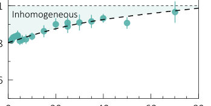
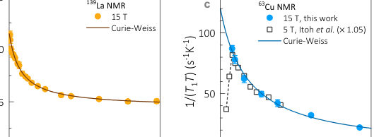
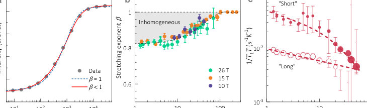
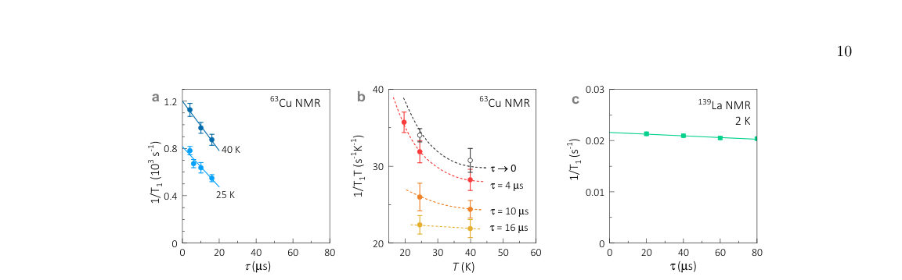
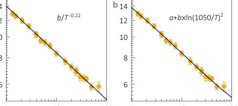
Summary. The researchers used high-field NMR to show that singular spin fluctuations persist deep into the overdoped regime of LSCO, potentially explaining the origin of strange-metal transport. They also demonstrate that these fluctuations are spatially inhomogeneous, which may reconcile their presence far from the known stripe-order boundary. This provides a new perspective on the electronic state from which strange-metal behavior emerges.
Why it may be interesting. not directly relevant
Main problem. Determining whether singular spin fluctuations are the microscopic origin of strange-metal behavior in the overdoped regime of cuprates and resolving the paradox of their persistence beyond the spin-stripe critical doping.
Main result. The study finds that low-energy dynamical spin susceptibility increases continuously down to the lowest temperatures at x=0.25, suggesting quantum-critical-like fluctuations, while also revealing that spatial electronic inhomogeneity may drive this behavior.
Method. High-field (up to 26 T) 139La NMR spectroscopy was used to suppress superconductivity and probe the intrinsic normal state, providing a more reliable measurement than 63Cu NMR which suffers from signal wipeout.
Model / system. Overdoped La2-xSrxCuO4 (LSCO) single crystals at x=0.25, specifically investigating the strange-metal phase characterized by linear-in-temperature resistivity.
Key observables. Spin-lattice relaxation rate (1/T1T), dynamical spin susceptibility (chi''(q, omega)), stretching exponent (beta), and NMR lineshape broadening.
Important parameters / regimes. Hole-doping level p=0.25, magnetic field up to 26 T, temperature down to 1.34 K, and the spin-stripe critical doping x=0.19.
Assumptions / limitations. Assumes that 139La NMR provides a representative probe of the bulk spin dynamics and that the observed 1/T1T increase is not an artifact of the density of states (Van Hove singularity).
Figures summary. Fig 1a shows 1/T1T fits to Curie-Weiss and power-law forms; Fig 1b shows the stretching exponent beta; Fig 4 shows the dependence of 63Cu 1/T1T on delay time tau; Fig 5 shows various fits for 139La 1/T1T; Fig 6 shows static inhomogeneity via NMR lineshape.
Paper structure. The paper introduces the problem of strange-metal transport, details the experimental NMR methodology and the advantages of 139La over 63Cu, presents the discovery of singular spin fluctuations, discusses the role of electronic inhomogeneity, and concludes with implications for the quantum critical origin of the phase.
Although spin fluctuations are central to the physics of high-Tc cuprates, their relevance to strange-metal behavior in the overdoped regime remains unclear. Here, we use high magnetic fields to suppress superconductivity and an NMR protocol tailored to electronic inhomogeneity to show that the low-energy limit of the dynamical spin susceptibility χ''(q,omega) at x=0.25 in La2-xSrxCuO4 increases continuously down to our lowest temperatures. This behavior is suggestive of quantum-critical fluctuations, a leading candidate mechanism for strange-metal transport, yet is observed well beyond the spin-stripe critical doping x=0.19. Our data further reveal that the spin dynamics are spatially inhomogeneous, suggesting that nanoscale electronic inhomogeneity may underlie this apparent paradox. These observations provide new insight into the electronic state from which strange-metal behavior emerges.
Authors: Luca Maria Del Bono, Giulio Biroli, Patrick Charbonneau, Marylou Gabrié
Type: theory · Category: disordered systems and neural networks · PDF: https://arxiv.org/pdf/2605.12597v1
Analysis basis: full PDF text, analyzed in chunks
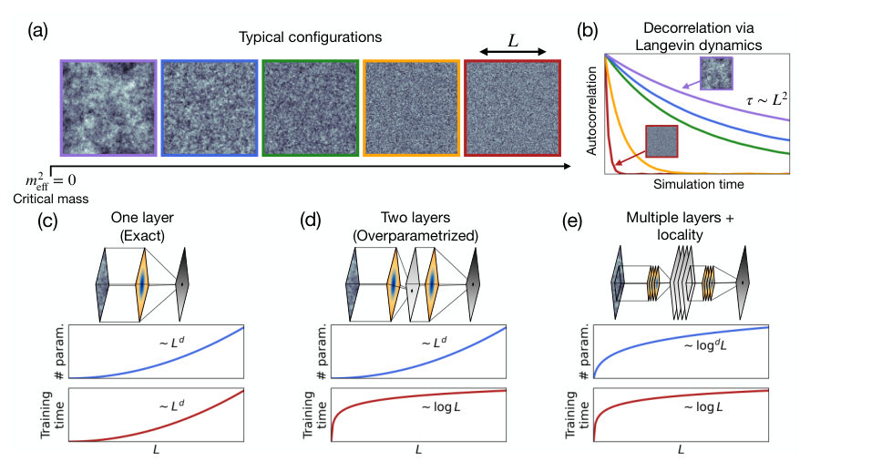
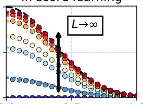
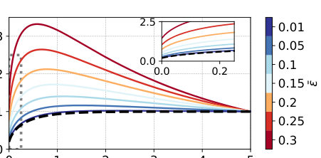
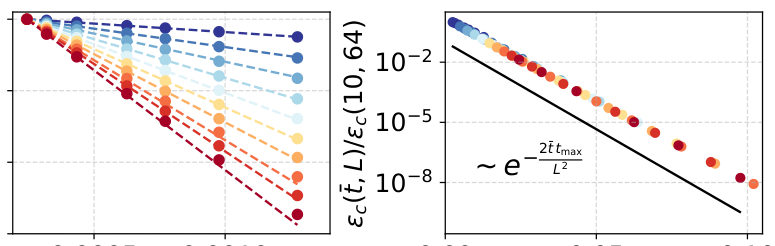
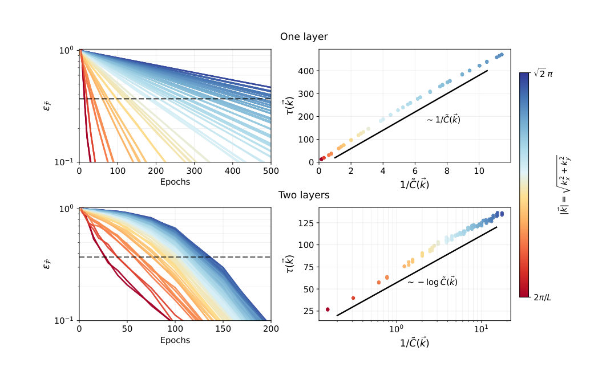
Summary. This paper identifies that diffusion models inherit the critical slowing down characteristic of traditional sampling methods when approaching phase transitions. It demonstrates that architectural improvements, such as increasing network depth or implementing local score approximations, can significantly accelerate training and generation.
Why it may be interesting. not directly relevant
Main problem. Investigating the phenomenon of critical slowing down in the training and generation processes of diffusion models near phase transitions.
Main result. The authors show that while one-layer architectures suffer from critical slowing down (scaling as L^2), using overparameterized two-layer architectures or local score approximations can reduce training time scaling to logarithmic (log L).
Method. The study uses an analytical framework based on the n -> infinity limit of the O(n) model, analyzing gradient descent dynamics and error propagation in Fourier space.
Model / system. The Gaussian limit (n -> infinity) of the O(n) model of statistical field theory, characterized by a Gaussian action with a kinetic term and a mass parameter.
Key observables. Training timescales, correlation time, Wasserstein distance, KL divergence, Frobenius norm of the covariance error, and effective mass.
Important parameters / regimes. Effective mass (m_eff), system size (L), diffusion time (t), coupling constant (g), and learning rate (eta).
Assumptions / limitations. The analysis is performed in the large-n limit (n -> infinity) to ensure analytical tractability and assumes a Gaussian action.
Figures summary. Figures illustrate the scaling of training time with system size, the impact of architecture depth on convergence, and the error scaling of the trained score kernel.
Paper structure. The paper introduces the problem of critical slowing down, derives the analytical score function for the O(n) model, analyzes the training dynamics of one-layer vs. two-layer networks, and evaluates the impact of locality and discretization errors.
Computational sampling has been central to the sciences since the mid-20th century. While machine-learning-based approaches have recently enabled major advances, their behavior remains poorly understood, with limited theoretical control over when and why they succeed. Here we provide such insight for diffusion models-a class of generative schemes highly effective in practice-by analyzing their application to the $O(n)$ model of statistical field theory in the Gaussian limit $n \to \infty$. In this analytically tractable setting, we show that training a score model with a one-layer network architecture matching the exact solution exhibits a form of critical slowing down in parameter learning. This slowing down also impacts the generation process, indicating that the well-known difficulties of sampling near criticality persist even for learned generative models. To overcome this bottleneck, we demonstrate the power of combining architectural depth with physical locality. We find that using a two-layer architecture drastically reduces the critical slowing down, with the training time scaling logarithmically rather than quadratically with system size. By introducing a local score approximation we show that this acceleration in training time can be achieved without increasing the number of neural network parameters. Taken together, these results demonstrate that diffusion models can overcome the critical slowing down through appropriate architectural design, and establish a controlled framework for understanding and improving learned sampling methods in statistical physics and beyond.
Authors: P. M. Déjardin
Type: theory · Category: statistical mechanics · PDF: https://arxiv.org/pdf/2605.13495v1
Analysis basis: full PDF text, analyzed in chunks
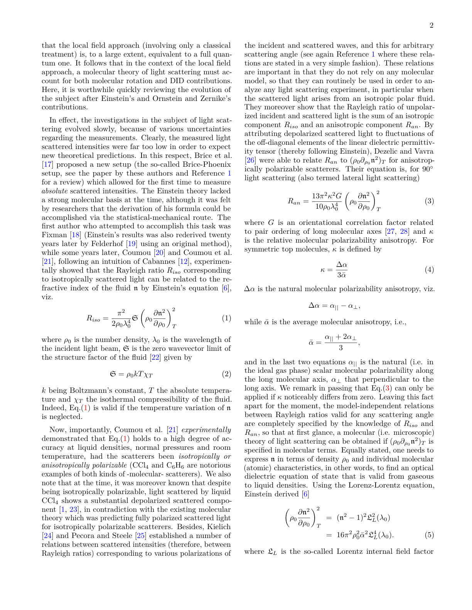
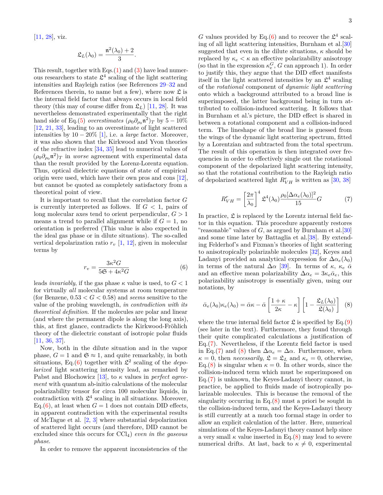
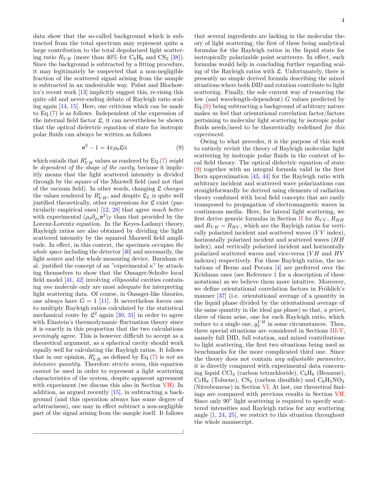
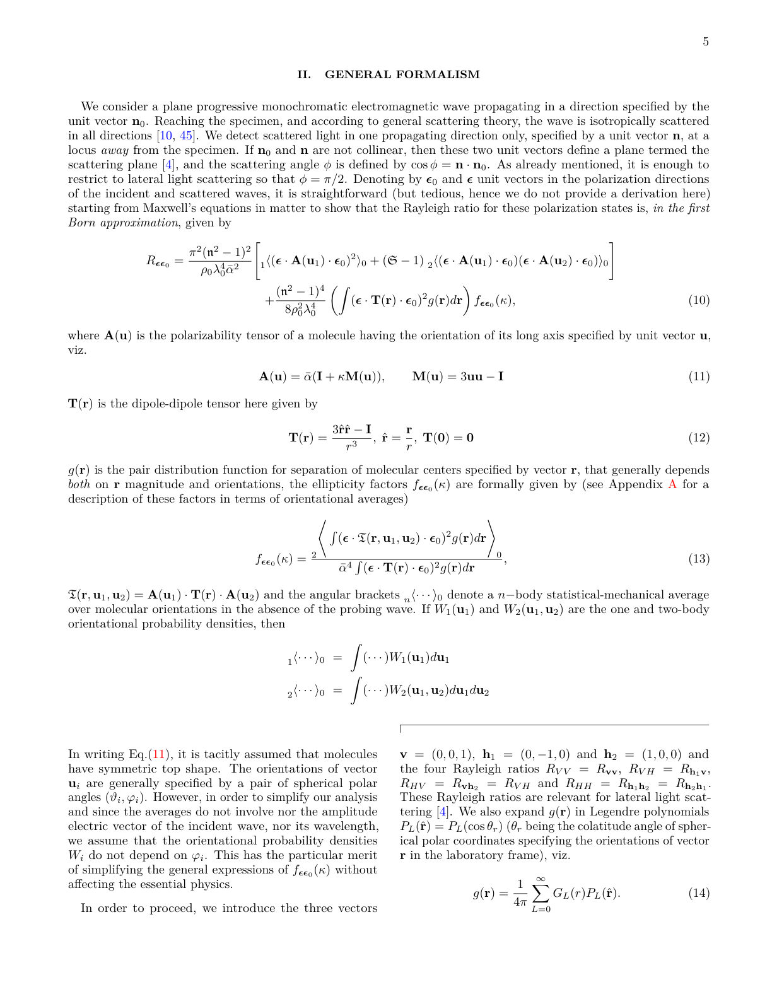
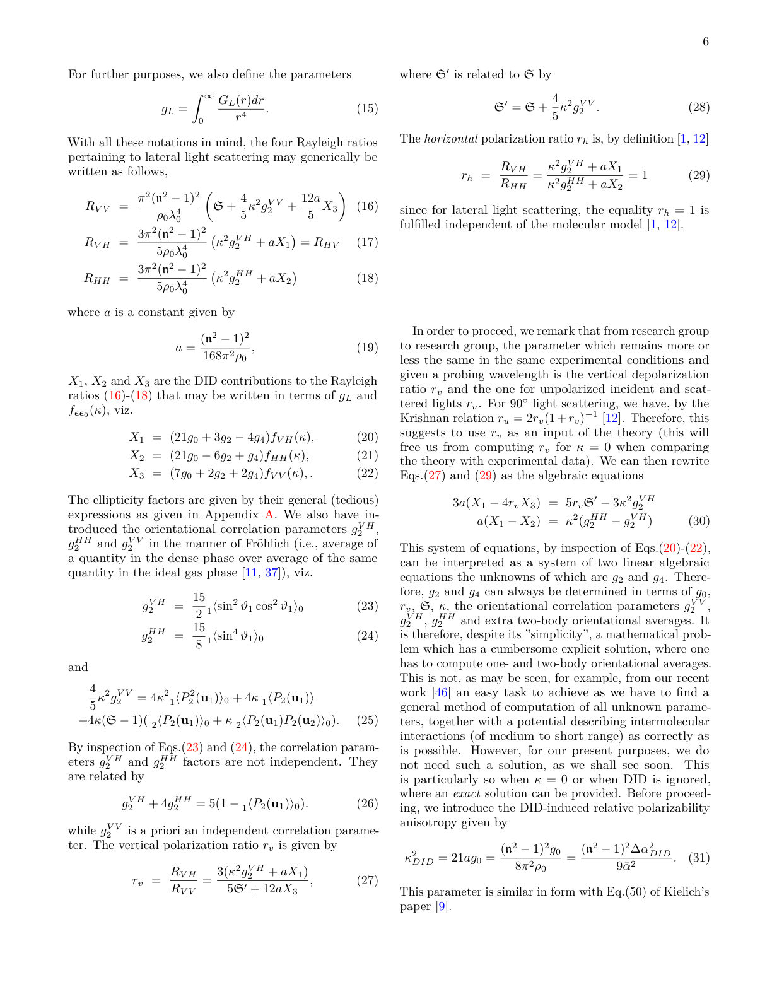
Summary. This paper revisits the theory of Rayleigh light scattering in dense polar liquids by integrating molecular rotation and dipole-induced dipole effects into a unified analytical framework. It provides simple, parameter-free equations that accurately predict scattering intensities and depolarization ratios across different liquid types. The work resolves long-standing discrepancies in how light scattering scales with the internal local field.
Why it may be interesting. not directly relevant
Main problem. The lack of correct analytical formulas for Rayleigh light scattering ratios in dense isotropic polar fluids that account for both molecular rotation and the dipole-induced dipole (DID) mechanism.
Main result. The derivation of simple analytical equations for Rayleigh ratios that successfully describe both rotation-dominated and DID-dominated regimes, showing excellent agreement with experimental data.
Method. A classical statistical mechanical approach using radiation theory and local field concepts within the first Born approximation, supplemented by a rotational mean field approximation.
Model / system. Dense isotropic polar fluids (such as benzene, toluene, and carbon tetrachloride) modeled as symmetric tops with molecular polarizability anisotropy.
Key observables. Rayleigh ratios (isotropic R_iso, vertical R_VV, horizontal R_HH, and depolarized R_VH), vertical depolarization ratio (r_v), and the derivative of the squared refractive index.
Important parameters / regimes. Molecular polarizability anisotropy (kappa), orientational correlation parameters (g_V^H, G), internal field factor (L), and the DID-induced anisotropy (kappa_DID).
Assumptions / limitations. Use of the first Born approximation, neglect of three-body contributions, and the application of the rotational mean field approximation.
Figures summary. The notes do not provide a specific description of figures, though they mention tables comparing theoretical predictions to experimental data for various liquids.
Paper structure. The paper identifies theoretical inconsistencies in existing models, develops a new framework based on local field theory and radiation theory, derives analytical solutions for different scattering regimes, and validates the theory against experimental data for several organic liquids.
The molecular theory of Rayleigh light scattering in dense isotropic polar fluids is reconsidered by suitably adapting local field concepts of electrostatics to propagating electromagnetic waves, hence accounting for both the rotational and dipole-induced dipole (DID) contributions. Simple analytical equations are derived for the various Rayleigh ratios relevant to lateral light scattering in various situations, namely pure DID, pure rotations and mixed contributions. For pure DID, the derived Rayleigh ratios are entirely analytical and very simple, while for pure rotation, the use of rotational mean field approximation is justified, hence allowing the description of Rayleigh ratios in terms of a single orientational correlation parameter that is straightforwardly determined as a positive root of a quadratic algebraic equation. Simple expressions for the Rayleigh ratios are also derived in two mixed situations where DID dominates rotation and when rotation dominates DID. Relation to previous experimental and theoretical work is discussed.
Authors: Jaime Jaramillo-Gutiérrez, José Torres-Arenas
Type: theory · Category: statistical mechanics · PDF: https://arxiv.org/pdf/2605.13626v1
Analysis basis: full PDF text, analyzed in chunks




Summary. This paper compares the thermodynamic geometry of 2D and 3D square-well fluids. It finds that while 2D systems show less accurate phase coexistence identification via R-crossing, their supercritical crossover lines (Widom lines) extend deeper into the supercritical regime than in 3D. The study highlights how reduced dimensionality enhances fluctuations and alters thermodynamic landscapes.
Why it may be interesting. not directly relevant
Main problem. The study investigates how reduced dimensionality (2D vs 3D) affects the thermodynamic geometry and the behavior of phase transition indicators in square-well fluids.
Main result. In 2D fluids, the R-crossing method is less accurate than in 3D, but Widom lines and the validity of the Clausius-Clapeyron equation extend further into the supercritical region due to enhanced fluctuations.
Method. The authors use Ruppeiner's thermodynamic geometry formalism, analyzing the scalar curvature and response functions derived from Helmholtz free energy equations of state.
Model / system. The study uses two-dimensional and three-dimensional square-well fluids as prototype models for studying phase transitions and thermodynamic landscapes.
Key observables. Ruppeiner scalar curvature (R), isobaric heat capacity (cp), thermal expansion coefficient (ap), and speed of sound (cs).
Important parameters / regimes. Potential range (lambda), reduced temperature (Tr), reduced density (rho), and reduced pressure (Pr).
Assumptions / limitations. The analysis is limited to the square-well potential, which is discontinuous, and the validity of the 3D and 2D equations of state is restricted to specific ranges of the potential range lambda.
Figures summary. Figure 1 shows critical values as a function of potential range; Figure 2 displays scalar curvature isotherms; Figure 3 compares phase coexistence lines via R-crossing vs ground truth; Figures 4-7 show extrema of response functions and curvature in 2D and 3D; Figure 8 shows pressure fits near the critical point.
Paper structure. The paper introduces the thermodynamic geometry framework, defines the 2D and 3D square-well models, presents critical behavior results, compares subcritical R-crossing validity, analyzes supercritical Widom lines, and concludes with implications for dimensionality and future continuous potential models.
Thermodynamic geometry of two-dimensional fluids has been investigated using a square-well model as a prototype fluid. A comparison with the three-dimensional case is performed in the subcritical and supercritical domains of thermodynamic space. In the subcritical region, it is found that the R-crossing method has a narrower range of validity for two-dimensional fluids compared to three-dimensional ones. On the other hand, in the supercritical region, an analysis of different Widom lines, including the R Widom line, shows that for two-dimensional fluids these lines extend further into the supercritical region than their three-dimensional counterparts. A similar behavior is observed for the validity of the Clausius--Clapeyron equation in two-dimensional fluids.
Papers from cond-mat.mtrl-sci, mes-hall, other, soft, supr-con. These archives are de-prioritized — they appear at the end regardless of relevance score.
Authors: A. M. Tishin
Type: theory · Category: other · PDF: https://arxiv.org/pdf/2605.13376v1
Analysis basis: full PDF text, analyzed in chunks
Topic relevance: 🔥 driven-dissipative phase transition 4/5 · 🔥 non-equilibrium dynamics 4/5 · 🔥 non-equilibrium universality 4/5 · methods for driven-dissipative 3/5 · Keldysh / 2PI / non-Gaussian methods 2/5 · spintronics-quantum-optics interface 2/5
Summary. This paper proposes a new theoretical framework to understand how nonlinearity can stabilize driven systems against uncontrolled particle production. By using a dimensionless scaling ratio, the author shows that strong anharmonicity can effectively truncate the Hilbert space, preventing parametric instability. This mechanism is shown to be applicable across a vast range of scales, from superconducting qubits to cosmological phenomena.
Why it may be interesting. It provides a universal metrological tool for predicting stability in non-equilibrium systems, bridging the gap between quantum optics (photon blockade) and condensed matter (magnons/skyrmions) through a unified scaling law.
Main problem. The lack of a unified, scale-invariant framework to predict and quantify the onset of non-adiabatic mode creation and the potential for unbounded parametric instability in driven, structured media.
Main result. The introduction of a scaling ratio (eta/U) that demonstrates how nonlinear frequency regulation (U) can suppress exponential mode growth, leading to a 'spectral blockade' and a transition from hyperbolic bosonic dynamics to stable, truncated Euclidean dynamics.
Method. Analytical derivation using WKB approximation, SVEA, and Bogoliubov transformations, complemented by high-precision numerical simulations using a 100-level bosonic Fock basis and the Lindblad master equation.
Model / system. A generalized wave-mechanics manifold encompassing various quasi-particles (magnons, phonons, skyrmions, transmons) modeled by a second-order wave equation with a time-dependent frequency and a nonlinear frequency regulator (U).
Key observables. Non-adiabaticity parameter (eta), scaling ratio (xi), stability coefficient (sigma), and mode occupancy/leakage.
Important parameters / regimes. Non-adiabaticity parameter (eta), nonlinear frequency regulator (U), scaling ratio (xi = eta/U), and the precision/reliability/chaos zones.
Assumptions / limitations. The system is initialized in the vacuum state; the frequency varies on a timescale comparable to the intrinsic period; the nonlinearity is treated as a frequency regulator.
Figures summary. Figure 1 shows the emergence of Euclidean normalization and the evolution of the stability metric (sigma) as a function of the scaling ratio (xi); Figure 2 compares the dynamics of closed versus open (dissipative) systems.
Paper structure. The paper begins by defining the problem of non-adiabaticity, introduces the scale-invariant eta parameter and the nonlinear regulator U, develops the mathematical framework for mode evolution, presents numerical verification of spectral blockade, and concludes with the metrological implications across different physical scales.
This study proposes an effective theoretical framework for non-adiabatic parametric excitation in structured media, incorporating a nonlinear frequency regulator U as a stabilizing mechanism. We introduce the non-adiabaticity parameter as a time-local diagnostic for driven non-stationary systems and analyze its competition with nonlinear spectral detuning through the scaling ratio. The principal physical result is that strongly nonlinear oscillatory systems can exhibit saturation of non-adiabatic parametric amplification: when the nonlinear regulator becomes sufficiently strong, exponential mode growth is dynamically suppressed and the excitation evolves toward a bounded low-occupancy regime. Using numerical verification in an expanded 100-level bosonic Fock basis, we demonstrate a crossover from hyperbolic amplification dynamics toward an effectively bounded response associated with spectral blockade and suppression of higher-order mode occupation. These results suggest that nonlinear spectral stabilization may represent a general mechanism for finite-amplitude non-adiabatic dynamics in driven structured media.
Authors: Anupama Chauhan, Sidhanta Sahu, Satyabrata Bera, Tuhin Debnath, Mintu Mondal, Anamitra Mukherjee, Siddhartha Lal, N. Kamaraju
Type: both · Category: strongly correlated electrons · PDF: https://arxiv.org/pdf/2605.13121v1
Analysis basis: full PDF text, analyzed in chunks
Topic relevance: 🔥 non-equilibrium dynamics 4/5 · 🔥 non-equilibrium universality 4/5 · driven-dissipative phase transition 3/5 · spintronics-quantum-optics interface 2/5

Summary. This paper investigates the ultrafast dynamics of the van der Waals ferromagnet Fe3GeTe2 across its magnetic transition. It identifies anomalous, non-universal critical slowing down of spin correlations and demonstrates how thermal acoustic phonons drive an emergent Fano interference between optical phonons and the electronic continuum. These findings highlight the complex interplay between spin, lattice, and electronic degrees of freedom in 2D magnetic materials.
Why it may be interesting. The study explores non-equilibrium phase transitions, non-universal critical dynamics, and the emergence of quantum interference (Fano effect) driven by thermal pathways, which are relevant to many-body dynamics and driven-dissipative systems.
Main problem. Investigating the coupling between electronic, spin, and lattice degrees of freedom across the magnetic phase transition in the van der Waals ferromagnet Fe3GeTe2.
Main result. The study reveals non-universal critical slowing down of intralayer spin dynamics (exponent ~0.3) and the emergence of nonequilibrium Fano interference in the A1g phonon mode in the paramagnetic phase.
Method. Two-color ultrafast pump-probe reflectivity spectroscopy combined with a microscopic electron-phonon model and Ginzburg-Landau formalism.
Model / system. The physical system is Fe3GeTe2 (FGT), a metallic van der Waals ferromagnet. The theoretical framework includes a Hamiltonian describing itinerant electrons, optical phonons, and acoustic phonons, alongside a two-temperature model for electronic and lattice heating.
Key observables. Transient differential reflectivity (delta R/R), relaxation timescales (tau1, tau2, tau3), Fano asymmetry parameter (1/|q|), phonon frequency/linewidth, and acoustic strain pulse amplitude.
Important parameters / regimes. Curie temperature (Tc approx 228-230 K), dynamical critical exponent (m approx 0.3), and critical amplitude ratio (R_tau approx 0.6).
Assumptions / limitations. Neglected vertex corrections based on Migdal's theorem; assumed a single-band parabolic electronic dispersion; used a simplified Klemens model for anharmonic decay.
Figures summary. Figures show temperature-dependent magnetization, Raman spectra, tri-exponential relaxation traces, the enhancement of acoustic strain near Tc, and calculated phonon softening and Fano asymmetry as functions of phonon temperature.
Paper structure. The paper introduces the material and problem, describes the pump-probe experimental setup, presents the hierarchy of relaxation timescales and critical slowing down, analyzes the emergent Fano interference and its mechanism, and concludes with the implications for magnetoelastic coupling.
Fe$_3$GeTe$_2$ is a prototypical metallic van der Waals ferromagnet with itinerant magnetism and a highly tunable Curie temperature, yet how electronic excitations couple to spin and lattice degrees of freedom across its magnetic transition remains largely unexplored. Here, we use two-color pump-probe reflectivity to investigate the coupled electronic, spin, and lattice dynamics. The time-resolved reflectivity exhibits a tri-exponential relaxation, in which the intermediate component shows an anomaly near the Curie temperature due to enhanced interlayer spin-lattice interactions, while the slowest component displays pronounced critical slowing down with an exponent of ~ 0.3, revealing non-universal relaxation dynamics associated with intralayer spin correlations. Furthermore, we observe an emergent nonequilibrium A1g phonon Fano asymmetry that is suppressed in the ferromagnetic phase but anomalously enhanced in the paramagnetic regime, driven by thermally activated anharmonic decay pathways that bridge the kinematic gap to a hot electronic continuum. The pronounced enhancement of the acoustic strain pulse amplitude near T$_c$ further evidences robust magnetoelastic coupling. Overall, our results reveal how magnetic order governs the interplay among critical spin dynamics, electronic continuum excitations, and lattice response in metallic van der Waals ferromagnets
Authors: Prasad Muragesh, Harikrishnan Sundaresan, Madhu Thalakulam
Type: experiment · Category: quantum information and computing · PDF: https://arxiv.org/pdf/2605.13571v1
Analysis basis: full PDF text, analyzed in chunks
Topic relevance: 🔥 QC/QI experiment 4/5 · quantum optics experiment 3/5
Summary. The paper presents a new method for creating microwave frequency combs on-chip using the unique properties of Strontium Titanate at cryogenic temperatures. By exploiting the material's high dielectric constant and field-dependent nonlinearity, the authors achieved a device that can tune both its center frequency and its spectral spacing. This provides a vital tool for the development of integrated, low-power control systems for quantum computing hardware.
Why it may be interesting. This work is highly relevant for quantum optics and quantum information as it provides a scalable, integrated method for generating phase-coherent microwave signals, which are essential for the control and readout of superconducting qubits.
Main problem. The need for low-power, all-electrical, on-chip, and tunable microwave frequency combs for cryogenic quantum technologies like superconducting and semiconducting qubits.
Main result. Demonstration of an all-electrical, on-chip microwave frequency comb using the field-induced nonlinearity of Strontium Titanate, featuring simultaneous tunability of both the center frequency and the Free Spectral Range (FSR).
Method. The researchers used a superconducting Aluminum coplanar waveguide resonator on a Strontium Titanate substrate, applying a continuous-wave microwave signal and a low-frequency modulation signal to induce phase modulation via the Pockels-like effect.
Model / system. A superconducting microwave cavity (Al CPW) integrated with a Strontium Titanate (SrTiO3) substrate in its quantum paraelectric phase at sub-Kelvin temperatures.
Key observables. Reflection coefficient (S11), resonant frequency, bandwidth (Q-factor), dielectric constant, phase modulation index, sideband amplitude, and phase noise.
Important parameters / regimes. Operating temperature (sub-Kelvin, ~500 mK), dielectric constant (> 20,000), cavity Q-factor (~2.8 x 10^4), and modulation frequency (10 MHz).
Assumptions / limitations. The bandwidth of the comb is limited by the cavity resonance linewidth; the presence of a 'dead layer' or defects in STO may cause modulation asymmetry.
Figures summary. Figure 1 shows the measurement setup, device micrograph, and simulated electric field; Figure 3 illustrates the effects of varying pulse width, modulation amplitude, and DC voltage on the comb structure; Figure 4 shows the time-domain and frequency-domain response.
Paper structure. The paper introduces the motivation for cryogenic microwave combs, describes the experimental platform and STO-based device, details the frequency comb generation mechanism and tunability, and concludes with a comparison to existing technologies.
A frequency comb, known for its precision as an "optical ruler", features an evenly spaced spectral pattern. While these combs are vital in photonic quantum technologies, their microwave counterparts are now highly sought after for cryogenic quantum technologies, including semiconducting and superconducting qubits and quantum electrical metrology, which mainly operate in the microwave regime. However, microwave combs are still largely underexplored, and typically rely on complex, high-power optical systems incompatible with the low-power, cryogenic on-chip quantum technologies. In this manuscript, we present an all-electrical, on-chip, cryogenic microwave frequency comb on Strontium Titanate (SrTiO$_3$), exploiting its Pockels-like effect in its quantum paraelectric phase. Our device, utilizing a superconducting microwave cavity, generating the frequency comb via cavity phase modulation enabled by the field-induced effective $χ(2)$ of SrTiO$_3$. The ability to continuously vary the dielectric constant of SrTiO$_3$ by the application of electric field, in its quantum paraelectric phase, makes it possible to control the comb's operating frequency range. The exceptionally high dielectric constant of SrTiO$_3$, > 20,000 in its quantum paraelectric state, enables an ultra-miniature design and on-chip integration with cryogenic quantum technologies.
Authors: Aleksandr Shabanov, Georgy Alymov, Dmitry Svintsov
Type: theory · Category: other · PDF: https://arxiv.org/pdf/2605.13351v1
Analysis basis: full PDF text, analyzed in chunks
Topic relevance: 🔥 Tavis-Cummings & cavity-many-emitter 4/5 · correlated cavity matter 3/5
Summary. This paper moves beyond the single-mode approximation to show that a large number of resonator modes significantly enhances the frequency reduction (softening) of cyclotron motion in a 2D electron system. By treating the system as coupled harmonic oscillators, the authors demonstrate that high mode density can drive the system's eigenfrequency toward zero. This provides new insights into the physics of light-matter interaction in the strong-coupling regime.
Why it may be interesting. It explores the transition from single-mode to multi-mode cavity QED, specifically looking at the 'deep-strong' coupling regime and the emergence of collective phenomena like polariton softening, which is highly relevant to cavity-mediated light-matter interactions.
Main problem. Investigating the Lamb shift of Landau levels in a two-dimensional electron system (2DES) when coupled to a multimode resonator, specifically addressing how multiple resonator modes affect the softening of the cyclotron frequency.
Main result. The study demonstrates that including a large number of resonator modes significantly enhances the softening effect of the cyclotron frequency, potentially allowing the lowest eigenfrequency to approach zero.
Method. The authors reduce the Hamiltonian to a set of coupled harmonic oscillators and solve for the eigenfrequencies using the self-energy method for x-polarized modes and a first-rank update method for y-polarized modes.
Model / system. A two-dimensional electron system (2DES) in a perpendicular magnetic field placed within a multimode resonator, modeled by a Hamiltonian including electron kinetic energy and resonator photon modes.
Key observables. Lowest eigenfrequency (omega_min), cyclotron frequency (omega_c), and the position of the lower polariton level.
Important parameters / regimes. Coupling constant (chi_xy), mode density, photon mass, resonator volume, and the regime of strong photon interaction/high mode density.
Assumptions / limitations. The 2DES is much smaller than the resonator wavelength (dipole approximation), the 2DES is located at a high-symmetry point, and the system is treated within the dipole approximation regime.
Figures summary. Figure 1 shows a schematic of the 2DES in a resonator; Figure 2 plots the lowest eigenfrequency versus the number of photon modes comparing numerical and analytical results; Figure 3 shows the lower polariton level position versus the lowest resonator frequency for different volumes.
Paper structure. The paper introduces the problem of multi-mode effects, defines the Hamiltonian and physical model, details the mathematical reduction to harmonic oscillators using self-energy and first-rank update methods, presents numerical and analytical results regarding frequency softening, and discusses scaling laws and geometric implications.
The use of resonators to modify the behavior of electromagnetic systems demonstrates its potential for application in a wide range of problems. However, existing theoretical studies often resort to the single-mode approximation, rarely considering a second resonator mode. In this paper, we show that including a large number of resonator modes in the model significantly enhances the softening effect of the cyclotron frequency of a two-dimensional electron system. We address this problem by demonstrating the possibility of reducing the system to a set of coupled harmonic oscillators and finding the eigenfrequencies of the oscillators. This is made possible by applying the self-energy method for modes in one polarization and the method for finding the eigenvalues of matrices that have undergone first-rank updating for modes in the perpendicular polarization.
Authors: Ding Xu, Saeed Rahmanian Koshkaki, Vicente Galicia, Chun-Ying Huang, Victoria Quirós-Cordero, Jakhangirkhodja A. Tulyagankhodjaev, André Koch Liston, Daniel G. Chica, Emma Lian, Amirhosein Amini, Yongseok Hong, Taketo Handa, P. James Schuck, Xiaoyang Zhu, Xavier Roy, Arkajit Mandal, Milan Delor
Type: both · Category: quantum information and computing · PDF: https://arxiv.org/pdf/2605.13707v1
Analysis basis: full PDF text, analyzed in chunks
Topic relevance: quantum optics experiment 3/5 · QC/QI experiment 2/5 · exotic spin models in light-matter 2/5 · interference shaping light 2/5 · spintronics-quantum-optics interface 2/5
Summary. This paper demonstrates that highly anisotropic ferroelectric NbOI2 waveguides enable massive optical spin-orbit interactions and programmable beam steering. By leveraging extreme dielectric anisotropy, the researchers achieved sub-micrometer spin-splitting and efficient nonlinear frequency conversion. This provides a scalable platform for future integrated opto-spintronic and photonic computing technologies.
Why it may be interesting. The use of a microscopic light-matter coupling model to describe spin-momentum locking and the observation of topological-like features (diabolical points) in a dielectric waveguide are highly relevant to quantum optics and photonic quantum information.
Main problem. Achieving sufficient optical spin-orbit interactions (SOI) and nonlinearities on sub-micrometer scales for dense photonic integration and on-chip polarization control.
Main result. Demonstration of giant optical spin-splitting and polarization-controlled beam steering in NbOI2 waveguides, establishing a scaling law between dielectric anisotropy and spin-splitting.
Method. Femtosecond optical microscopy, Stokes parameter imaging, and interferometric scattering (iSCAT) microscopy combined with a microscopic light-matter coupling (MLMC) Hamiltonian model.
Model / system. The physical system is a ferroelectric van der Waals semiconductor NbOI2 slab waveguide. The theoretical framework uses a Multilayered Multimode Coupling (MLMC) Hamiltonian and an effective Rashba-Dresselhaus formalism to describe TE-TM mode splitting.
Key observables. Stokes parameters (S0, S1, S2, S3), second harmonic generation (SHG), beam splitting angles, and transverse momentum.
Important parameters / regimes. Dielectric anisotropy, refractive index (n > 3.5), propagation distances (> 35 micrometers), and sub-micrometer spin-splitting scales.
Assumptions / limitations. The dielectric function is modeled using a Lorentz-oscillator approach, and edge refraction effects are corrected using a Mueller-matrix approach.
Figures summary. Figure 1 shows the crystal structure, dielectric function, and anisotropy comparisons; Figure 2 displays spatiotemporal imaging of beam splitting; Figure 4 illustrates polarization-dependent beam steering and scaling laws across different materials.
Paper structure. The paper introduces the challenge of integrated photonics, describes the NbOI2 material properties, presents experimental ultrafast imaging of spin-splitting and nonlinearities, provides a microscopic Hamiltonian model for validation, and concludes with a generalized scaling law for vdW waveguides.
Optical spin-orbit interactions (SOI) link photonic spin to momentum, offering a route toward on-chip polarization control and beam steering. Nevertheless, achieving sufficient optical SOI and nonlinearities on sub-micrometer scales - a prerequisite for dense photonic integration - remains an outstanding challenge. Here, we show that highly birefringent van der Waals (vdW) waveguides provide an ideal, chip-compatible platform to address this limitation. We focus on the ferroelectric semiconductor NbOI2, which exhibits record optical nonlinearities and dielectric anisotropy. Using femtosecond optical microscopy, we image light propagation and harmonic conversion beyond the total internal reflection barrier over tens of micrometers in NbOI2 slab waveguides. We report giant optical spin-splitting through the optical spin Hall effect, which facilitates spatial separation of optical spin currents on sub-micrometer scales, in quantitative agreement with a microscopic light-matter interaction model. We further leverage optical spin-momentum locking to realize polarization-controlled waveguide steering. We generalize these observations across various vdW waveguides and empirically confirm a scaling law linking dielectric anisotropy to geometric spin-splitting. Our results establish highly anisotropic vdW waveguides as an ideal platform for densely integrated opto-spintronic technologies.
Authors: Michael Hein, Juan Carlos Cuevas, Wolfgang Belzig
Type: theory · Category: strongly correlated electrons · PDF: https://arxiv.org/pdf/2605.12758v1
Analysis basis: full PDF text, analyzed in chunks
Topic relevance: Kondo & dissipative impurity 3/5
Summary. This paper theoretically investigates how magnetic impurities can serve as local probes to identify the unique features of Ising superconductivity in 2D materials. It demonstrates that the broken spin-rotation symmetry leads to a split YSR spectrum and distinct transport signatures. These findings provide a roadmap for using STM to distinguish unconventional Ising pairing from standard BCS superconductivity.
Why it may be interesting. The paper explores quantum phase transitions and the breaking of spin-rotation symmetry in a many-body system, which is relevant to understanding how local impurities can be used to probe and manipulate the topological or unconventional properties of a many-body condensate.
Main problem. The study aims to identify experimental signatures that distinguish Ising superconductors (ISCs) from conventional BCS superconductors by investigating how Yu-Shiba-Rusinov (YSR) bound states encode the underlying pairing structure.
Main result. The researchers found that the YSR spectrum in ISCs splits into two spin-dependent branches and can host two distinct pairs of subgap states, with the spectrum's features (like avoided crossings) depending on the impurity moment direction and in-plane magnetic fields.
Method. The work employs a quasi-classical Green's function formalism using the Eilenberger equation and the Bogoliubov-de Gennes (BdG) framework, utilizing a valley-dependent unitary transformation and Schur-complement reduction.
Model / system. The system consists of a single magnetic impurity (modeled via the Anderson model in the classical spin limit) on a 2D transition-metal dichalcogenide (1H-TMD) substrate exhibiting Ising spin-orbit coupling and an in-plane magnetic field.
Key observables. YSR bound-state energy spectrum, tunneling response (STM), local density of states (LDOS), supercurrent (current-phase relation), and the superconducting gap.
Important parameters / regimes. Ising spin-orbit coupling strength, in-plane magnetic field (Bx), exchange coupling (J), on-site potential (U0), hybridization strength (Gamma), and impurity magnetic moment orientation (theta).
Assumptions / limitations. The impurity is treated in the classical/static spin limit (kBTK << Delta), the density of states is assumed constant in the low-energy limit, and pairing within the Gamma pocket and inter-valley couplings are neglected.
Figures summary. Figure 1 shows the normal state band structure and the TMD lattice; Figure 7 illustrates the superconducting gap as a function of the in-plane magnetic field; Figure 9 displays the components of the effective magnetic moment and bound state energies.
Paper structure. The paper introduces the problem of identifying Ising superconductivity, describes the theoretical model and Hamiltonian, details the Green's function and symmetry analysis methods, presents results regarding spectral splitting and phase transitions, and concludes with experimental implications.
The nature of the superconducting state in two-dimensional transition-metal dichalcogenides remains under active debate. A widely used description invokes so-called Ising superconductivity. In this work, we investigate theoretically this pairing state by employing single magnetic impurities as local probes of the superconducting condensate. We analyze the formation of Yu-Shiba-Rusinov bound states in the presence of Ising spin-orbit coupling and an in-plane magnetic field to study how their spectral properties encode the underlying pairing structure. We identify distinct features in the bound-state spectrum and tunneling response that differentiate this system from conventional superconductors. Our results demonstrate that magnetic impurities provide a sensitive probe of the structure of the superconducting state and yield experimentally accessible signatures of unconventional aspects of Ising superconductivity.
Authors: Serafim Egorov, Antoine Sanner, Jean Sulem, Lars Pastewka, Mathias Lebihain
Type: theory · Category: disordered systems and neural networks · PDF: https://arxiv.org/pdf/2605.12631v1
Analysis basis: full PDF text, analyzed in chunks
Topic relevance: non-equilibrium dynamics 2/5 · non-equilibrium universality 2/5
Summary. This paper presents a new numerical method to simulate 3D crack growth in disordered brittle materials by combining variational and perturbative approaches. It efficiently handles large-scale simulations to show how material randomness leads to intermittent crack growth and a transition between weakening and toughening regimes.
Why it may be interesting. The study of depinning transitions and the interplay between long-range elastic interactions and quenched disorder is highly relevant to the physics of many-body systems and the dynamics of interfaces in disordered media.
Main problem. Developing a numerical framework that bridges variational and perturbation approaches to model 3D crack propagation in heterogeneous, perfectly brittle solids under mixed-mode loading.
Main result. The authors demonstrate a method that captures the transition from smooth to intermittent crack growth and reveals a size-dependent crossover from disorder-induced weakening to toughening via depinning instabilities.
Method. A variational reduced-order model using a matrix-free Newton conjugate gradient algorithm with a trust region, utilizing FFT for efficient energy evaluation and JAX for automatic differentiation.
Model / system. 3D coplanar propagation of sharp cracks in heterogeneous, isotropic, and linearly elastic, perfectly brittle solids under mixed-mode I+II+III loading.
Key observables. Stress Intensity Factors (K_I, K_II, K_III), energy release rate (G), crack-front position/deformation, and surface area variation.
Important parameters / regimes. Disorder intensity, mode mixity, Poisson's ratio, heterogeneity correlation length, and finite-size effects.
Assumptions / limitations. The material is perfectly brittle, isotropic, and linearly elastic; the crack remains sharp (no diffuse damage scale); propagation is quasi-static and coplanar.
Figures summary. Figure 1 illustrates crack front perturbations and geometric configurations; Figure 2 shows crack propagation and energy landscapes; Figure 4 compares numerical results to analytical predictions for shear loading; Supplementary figures show convergence studies regarding discretization and step size.
Paper structure. The paper introduces a new variational-perturbative model, derives analytical benchmarks, validates the numerical implementation against these benchmarks, and then performs large-scale simulations to study the effects of disorder and mode mixity.
We present a variational reduced-order model for three-dimensional coplanar propagation of sharp cracks in heterogeneous perfectly brittle solids under mixed-mode I+II+III loading. The approach connects the variational fracture formulation of Francfort and Marigo (1998) and the perturbation theory of Rice (1985) by computing equilibrium crack-front configurations through minimization of the total energy defined as the sum of (i) the elastic potential energy, evaluated asymptotically from front deformations, and (ii) the dissipated energy, set by the fracture energy field. The potential energy and its derivatives are evaluated efficiently using the Fast Fourier Transform. The resulting nonconvex box-constrained minimization problem is solved with a matrix-free Newton conjugate gradient algorithm with a trust region and physics-based preconditioning, enforcing irreversibility while resolving energy barriers and long-range elastic interactions. We validate our implementation against newly derived analytical solutions. We then perform 116,000 large-scale simulations of tensile and shear crack propagation in disordered media to quantify the impact of finite-size effects, disorder intensity, and mode mixity. The simulations reproduce the transition from smooth to intermittent crack growth, and show that mode mixity has limited influence on the onset of intermittency but induces quasi-elliptic fronts in mixed II+III loading. They reveal a size-dependent crossover from disorder-induced weakening to toughening controlled by the emergence of depinning instabilities.
Authors: Andrea S. Dai, Fuyang Tay, Ding Xu, Inki Lee, Noah Bussell, Daria Balatsky, Francesco L. Ruta, Emma Lian, Colin Nuckolls, Xavier Roy, James G. Analytis, Andrew J. Millis, D. N. Basov, Milan Delor
Type: experiment · Category: other · PDF: https://arxiv.org/pdf/2605.12686v1
Analysis basis: full PDF text, analyzed in chunks
Topic relevance: interference shaping light 2/5 · spintronics-quantum-optics interface 2/5
Summary. The researchers successfully demonstrated the ability to steer light-matter waves (hyperbolic polaritons) in a natural crystal by simply changing the handedness of the incident light. This was achieved using a new microscopy technique that overcomes the difficulty of imaging high-momentum particles. This discovery establishes natural hyperbolic materials as a platform for reconfigurable nanophotonic devices.
Why it may be interesting. not directly relevant
Main problem. The difficulty in observing and controlling the hyperbolic spin Hall effect (SHE) in natural materials due to the momentum mismatch between high-momentum hyperbolic plasmon polaritons (HPPs) and standard far-field optical objectives.
Main result. Demonstration of the hyperbolic spin Hall effect in the natural van der Waals metal MoO2, showing that light helicity can be used to on-demand steer chiral plasmons.
Method. A novel oblique-illumination far-field pump-probe microscopy technique that uses interferometric downshifting to access high-momentum modes and provides high-sensitivity imaging of HPPs.
Model / system. The physical system is a 62-nm-thick exfoliated microcrystal of MoOCl2, a natural van der Waals metal with highly anisotropic dielectric properties (metallic along the a-axis, dielectric along the b and c axes).
Key observables. Helicity-dependent propagation direction of polariton rays, V-shaped periodic fringe patterns, circular dichroism maps, and isofrequency contours.
Important parameters / regimes. Probe energy (1.5-1.91 eV), pump-probe delay (0.4 ns), numerical aperture (NA = 1.4), and the transition from elliptical to hyperbolic plasmonic regimes.
Assumptions / limitations. The study notes deviations from theoretical dispersion at high energies, potentially due to inaccuracies in dielectric functions or leaky modes from interactions between HPPs and SPPs.
Figures summary. Fig 1 shows the crystal structure, dielectric function, and helicity-dependent launching of HPPs. Fig 4 shows pump-probe images and experimental vs. simulated dispersion. Supplementary figures detail the PSF deconvolution and thickness-dependent studies.
Paper structure. The paper introduces the challenge of the hyperbolic SHE, describes the MoOCl2 system and the novel oblique-illumination pump-probe microscopy, presents the experimental demonstration of helicity-dependent steering, validates the dispersion and Q-factors, and discusses the topological transition between polariton types.
Control of light polarization and propagation in sub-wavelength architectures is foundational to nanophotonic technologies. A frontier direction is to leverage strong optical spin-orbit interactions to realize polarization-selective light steering, known as the photonic spin Hall effect. In this context, hyperbolic plasmon polaritons (HPPs) are of particular interest as they offer large optical spin-orbit coupling from strong confinement and dielectric anisotropy, as well as ray-like propagation. Despite theoretical predictions, however, the hyperbolic spin Hall effect in natural materials has remained elusive. Here, we demonstrate the hyperbolic spin Hall effect in the visible and near-infrared range in the natural hyperbolic van der Waals metal MoOCl2. Enabling this discovery is a novel far-field pump-probe microscope that facilitates the launching and imaging of HPPs with exceptional sensitivity through interference with a high-momentum reference field. This approach preserves excellent control over light polarization, overcoming a key barrier to polarization-selective interrogation of hyperbolic materials. We show that both hyperbolic and surface plasmons in MoOCl2 display chiral fields, and that their propagation direction can be completely switched upon light helicity reversal. Our results demonstrate on-demand steering of chiral plasmons, firmly establishing natural hyperbolic materials as ideal components for reconfigurable nanophotonics and chiral light-matter coupling.
← Index · ← Previous · Next →